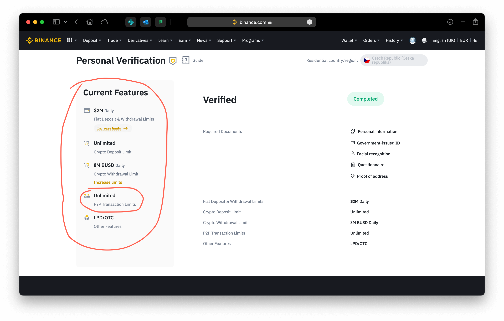
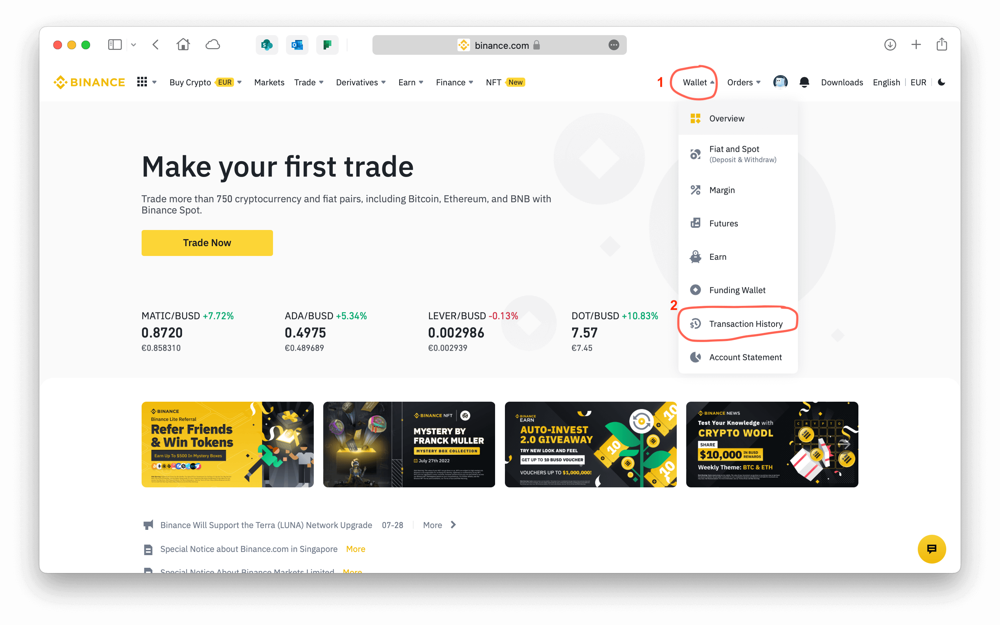

Как купить крипту с помощю карты Tinkoff, превратить крипту в GBP (или евро) и перечислить деньги на свой счет
Создаем свой account на
Binance -
крупнейшей криптобирже в мире.
Потребуется загран паспорт РФ и комп с камерой.
И нужно будет установить приложение Binance на смартфон.
Пока Binance не проверит вашу личность, покупать и продавать будет нельзя.
Вот тут, в Identification, можно проверить все ли виды операций вам доступны... Или повторить идентификацию, если что-то не сработало.
Все должно выглядеть примерно так, как на картинке ниже.
Нам понядобятся P2P Transactions.
Так что они должны быть доступны.

Когда все будет уже доступно, идем в верхнее меню, нажимаем Trade, а потом P2P.
Там ОЧЕНЬ советую просмотреть User Guide.
Теперь можно начинать покупать крипту
1 - сначала выбираем нужную нам крипту – USDT. Она привязана к USD, что сильно снижает риски скачков курса криптовалют.
2 - потом выбираем Fiat (обычные деньги), которыми мы собираемся платить за USDT. В нашем случае - RUB (рубли)
Чтобы облегчить поиск подходящего контрагента, заводим примерную сумму рублей, которую мы хотим обменять на USDT
Кликаем Search.
Чтобы найти всех тех, кто принимает платежи в Tinkoff, отфильтровываем Payment по 'Tinkoff'.
А потом из списка (отсортированного по курсу, по возрастанию) выбираем контрагента...
Смотрим на количество проведенных сделок и % выполнения
А выбрав продавца, нажимаем его зеленую кнопку Buy USDT
Тут мы заносим точную сумму рублей, которые мы хотим заплатить за USDT.
Видим сколько USDT это нам даст.
И нажимаем кнопку Buy USDT - мы практически заключаем контракт.
Нам сразу сообщают куда надо заплатить наши рубли.
Открываем приложение Tinkoff (или заходим в свой Tinkoff account на компе)
И перечисляем обещанную сумму рублей на указанный номер карты Tinkoff
Убеждаемся, что деньги ушли.
НЕ ЗАБЫВАЕМ СРАЗУ ПОСЛЕ ЭТОГО НАЖАТЬ НА КНОПКУ 'Transferred, notify seller'
На все это у нас 15 минут!
Крипта обычно поступает очень быстро.
Чтобы ее увитдеть, надо зайти в свой Funding Wallet
Это должно выглядеть примерно так. Только сумма будет >0.000000000
Теперь мы хотим превратить USDT в GBP.
Для этого нам надо переместить (Transfer) USDT из 'Funding' Wallet в 'Fiat and Spot' Wallet.
Указываем количество (можно нажать MAX) и жмем Confirm.
Переходим в 'Fiat and Spot' Wallet.
Там находим в списке USDT и жмем Convert, чтобы поменять их на GBP
Указываем, сколько USDT будем превращять в GBP. Можно опять нажать MAX.
Выбираем валюту (для вас – GBP) и конвертируем.
Возвращаемся в Fiat and Spot. Там должны появиться фунты.
Теперь их можно Withdraw.
(обратите внимание на 'Deposit' - так можно переводить Fiat (обычные деньги) со своего банковского счета или с карты в Binance (небольшую сумму). В процессе Binance " запомнит" банковский счет или карту, на который(ую) потом можно будет Withdraw деньги)
В новом окошке можно выбрать куда вы будете withdraw деньги...
Нажимаем Continue.
Теперь вводим сумму GBP (или что у вас там есть) и опять жмем Continue.
Еще один-два шага после этого (там все просто и понятно) и все! Теперь терпеливо ждем прихода денег.
Если вдруг неуютно и кажется, что что-то не так, то через Wallet можно зайти в Transaction History.
И там все посмотреть:
